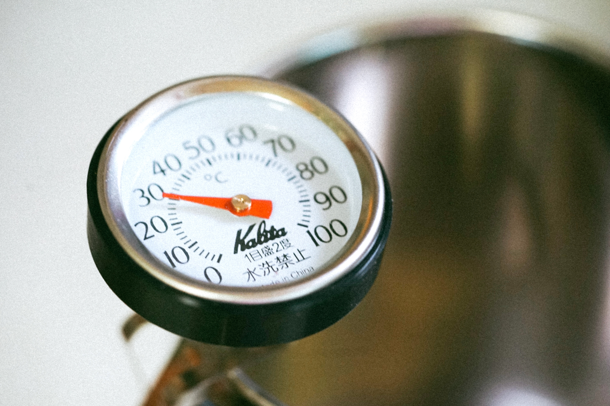

체성분 분석분야 넘버원 기업 인바디(대표 차기철)도 최근 강남구 논현동 신사옥을 매입 완료하고 인재 경영을 위한 발판을 마련해 주목된다.
세계적인 기업으로 도약하기 위한 2016년부터 인도, 아시아 법인설립 2017년에는 공장 증축과 유럽 법인 설립 2018년 신사옥 매입까지 모든 준비가 척척 진행되고 있다는 점에서 긍정적 신호라는 평가다. 회사 관계자는 “인바디는 채용과 육성, 즉 인재를 매우 중요하게 생각하기로 유명한데 구직자들이 개포동 사옥의 위치를 보고 아쉬워하는 경우를 보았다”며 “기존 임직원들이 교통이 불편해 아쉬워하는 모습을 보고 결단을 내린 것으로 알고 있다”고 밝혔다. 이는 지난 주총에서 차기철 대표가 밝혔던 인재 육성에 집중하는 특유의 경영 전략과 일맥상통하는 얘기이기도 하다. 현 개포동 사옥은 매각하지 않고 지속적으로 활용할 계획인 것으로 알려졌다. 